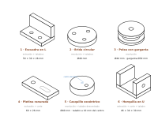

Contenido
S10 · Del modelo al STL: fabricar empieza antes de imprimir
Qué necesitas decidir
¿Está el modelo listo para convertirse en capas sin perder escala, detalle o resistencia?
Recupera tu modelo de la unidad de diseño. Si no está disponible o no supera la revisión, usa el STL de referencia de la pieza que te haya sido asignada. El plan B conserva el trabajo de laminado, fabricación y control.
Glosario visual de las piezas del catálogo

Onshape conserva un modelo paramétrico con caras y operaciones. Al exportar a STL, la superficie se aproxima mediante triángulos: el archivo describe una malla, no conserva cotas, operaciones ni una unidad obligatoria. Por eso la unidad se declara al exportar e importar.
Qué debes comprender y saber usar
Acción observable: exportas una geometría y obtienes un archivo STL. Ese archivo convierte la superficie en triángulos. Antes de laminar debes comprobar que mantiene la escala, encierra un volumen y conserva los detalles que la boquilla puede fabricar.
| Concepto | Definición | Qué comprobar |
|---|---|---|
| Malla cerrada o estanca | cada arista pertenece a las caras necesarias para encerrar un volumen sin agujeros | el laminador reconoce interior y exterior |
| Malla manifold | la vecindad de caras representa una superficie físicamente coherente, sin aristas o vértices ambiguos | no hay caras internas, solapes ni bifurcaciones imposibles |
| Resolución STL | tolerancia angular y de distancia usada al aproximar curvas con triángulos | suficiente detalle sin crear un archivo innecesariamente enorme |
| Voladizo | zona que se extiende sobre capas anteriores con apoyo insuficiente | orientación, puente, soporte o rediseño |
| Pared mínima | espesor local que el proceso puede reproducir con trayectorias estables | relación con boquilla, perímetros y función; no usar una cifra universal |
| Tolerancia de ajuste | intervalo dimensional que permite la relación prevista entre piezas | holgura, contracción y calibración del proceso |
| Pieza del catálogo | Cómo se modeló | Reto de imprimibilidad |
|---|---|---|
| 1 · Escuadra en L | extrusión y taladros | apoyo amplio; el ala crece en vertical |
| 2 · Brida circular | revolución y taladros | taladros pequeños y tolerancia de ajuste |
| 3 · Polea con garganta | revolución | la garganta queda en voladizo según se oriente |
| 4 · Pletina ranurada | extrusión y corte | puente corto sobre la ranura |
| 5 · Casquillo excéntrico | revolución y taladro descentrado | pared desigual alrededor del taladro |
| 6 · Horquilla en U | extrusión, corte y taladro | dos alas altas y un hueco entre ellas |
Revisión antes de exportar
apoyo amplio · menos soportes · capas coherentes con el esfuerzo
apoyo pequeño · voladizos · mayor riesgo y tiempo
Una resolución «fina» no mejora una cota incorrecta ni elimina los escalones de capa. Si el triángulo es mucho menor que lo que la boquilla y la altura de capa pueden reproducir, solo aumenta tamaño de archivo. En piezas curvas se inspecciona la desviación visible; en caras planas, que no aparezcan triángulos o normales invertidas que alteren el volumen.
Caso breve · taladro nominal de 8 mm
Que el CAD indique 8 mm no garantiza una pieza de 8 mm. La triangulación, el ancho de línea, la contracción y la medición influyen. El STL debe conservar la geometría prevista y S12 comprobará el resultado; si hay ajuste con un eje, se diseña una tolerancia y se valida con el proceso real.
Hito del prototipo
Exporta desde Onshape en STL, milímetros y resolución adecuada. Impórtalo en un visor o en Kiri:Moto y comprueba escala, geometría y cara de apoyo. Conserva el STL para la tarea Prototipo impreso en 3D; todavía no la entregues.
Verdadero o falso
Decide si cada afirmación describe un STL listo para laminar. Lee la explicación antes de continuar.
00:00: